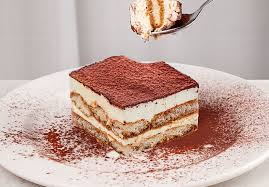

Tiramisù

Description
Tiramisù is an amazing italian dessert. Unfortunately,
it was the start of a lot of drama in my life, but I am
still proud I can prepare one.
Do you want your blood-sugar and caffeine levels to degenerate?
Here is what you need.
Ingredients
- Mascarpone cheese (750g)
- Ladyfingers (250g)
- Coffee (300g)
- Eggs (260g)
- Sugar (120g)
Steps
- Prepare coffee and leave it in a wide container to cool down.
- Break the eggs and separate whites and yolks. Start mixing the yolks by adding
half of the sugar dose. Once the mix reaches an uniform colour and consistency,
gradually start to add mascarpone while mixing.
- Once all the mascarpone is mixed with the yolks, switch to the whites.
Add the remaining amount of sugar and mix strongly.
To double-check the desired consistency, the mix should
remain attached to the bowl even whe turned upside down.
- Now, start to gradually add the white mix to the first bowl.
Strongly mix the first scoop, to then gently and softly deal with the rest.
This will finally lead to a tasty Tiramisù cream.
- Pick an appropriate container and add a first generous layer of cream.
Once the first layer is flat and uniform, soak the ladyfingers in coffee and
carefully place them on the cream layer.
- Repeat the operation, I like to prepare three layers of cream and two of
biscuits, but that's also up to your personal preference. Add cocoa powder on
top of the last cream layer.
- Enjoy your beautiful creation. Do not use it as a way to get in a toxic
relationship.